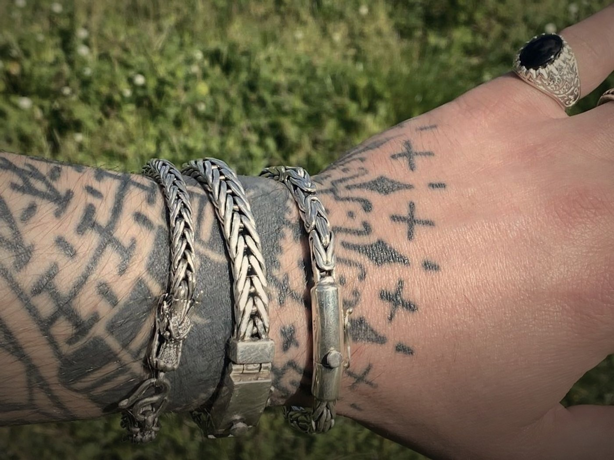
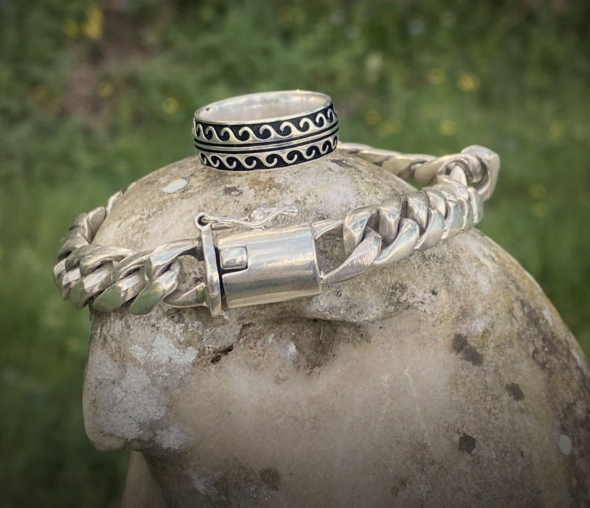
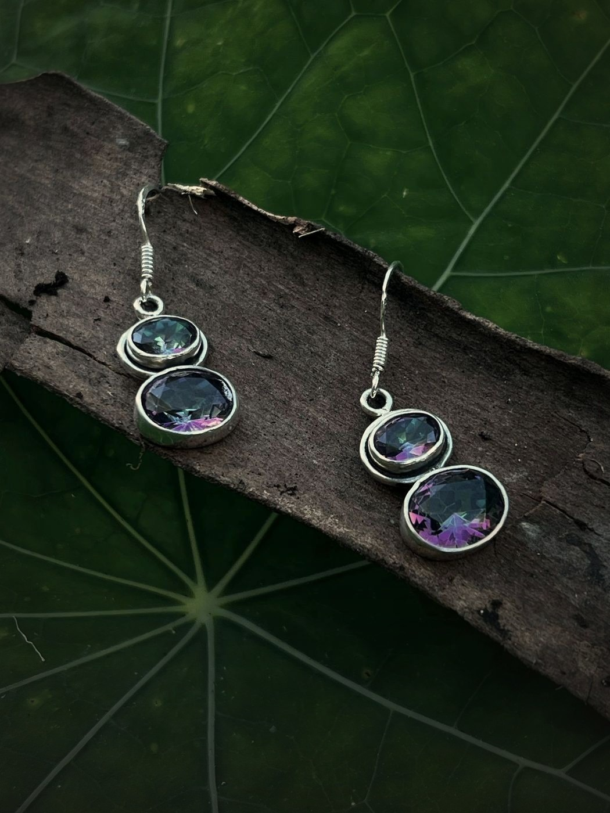
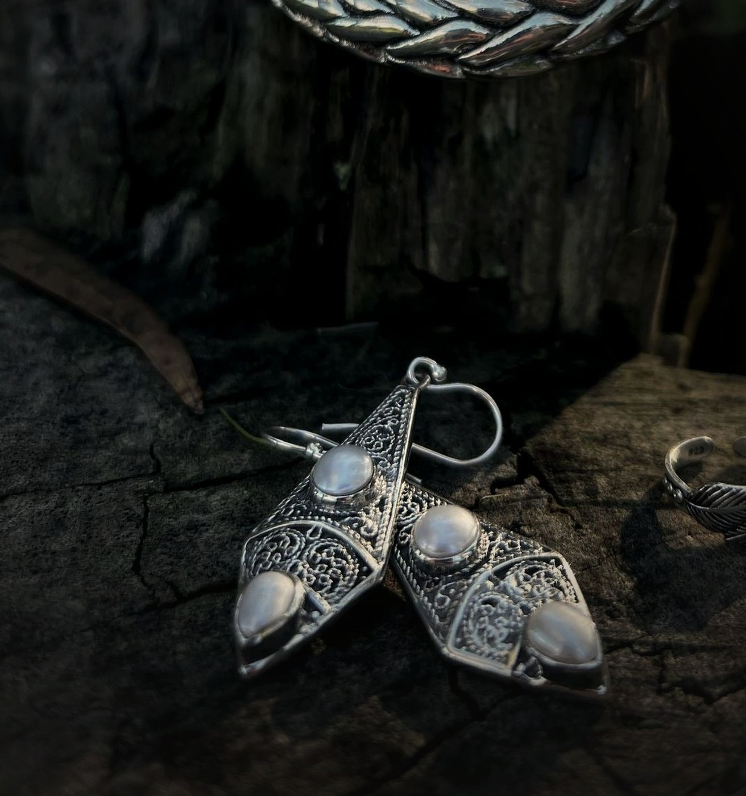
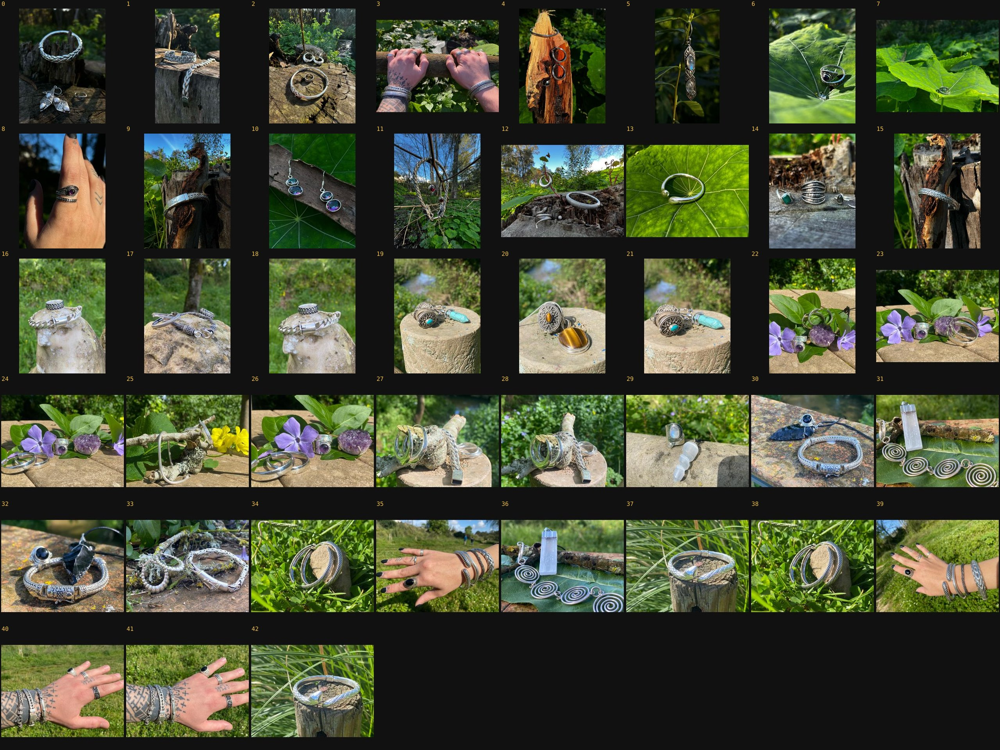

Bancada de trabalho · 9–10 Agosto 2026
Tudo o que se segue vive no scratchpad da sessão — 267 ficheiros, 976 MB. Nada disto entrou na base de dados nem no repositório.
Fotografias reais da casa, levadas para a atmosfera do site: saturação a 62 %, aquecimento leve, vinheta e queda de luz em baixo. Nenhum elemento gerado.

Trançada, espiga e bizantina. A única das tratadas com pessoa — e a única sem referência confirmada.

O céu azul saiu no corte. O anel de ondas ao lado continua por identificar.

Entrou sem corte — o enquadramento original já servia.

São brincos — mas estão catalogados em Anéis · Prata. Fica assinalado, não mexido.
Ambiente · brincos de quartzo místico sobre madeira e folha. Peças: PPB0013. Origem: media/gallery/WhatsApp Image 2025-02-22 at 18.50.22.jpeg (índice 10). Tratamento: corte, saturação a 62 %, aquecimento leve e vinheta. Fotografia real, sem elementos gerados. Etiquetas: ambiente;tratada;PPB0013
Gravado em EXIF (ImageDescription e XPKeywords), não num ficheiro à parte. Quem abrir a imagem daqui a um ano, noutra máquina, sabe a que peça se refere. Verificado na leitura de volta: 658 bytes de EXIF, PPB0013 presente.
Reprovadas e apagadas. Compus duas — a pulseira bizantina sobre laje de pedra e as argolas sobre folha — com a peça recortada da foto real e o cenário tirado de outra foto da casa. Não ficaram bem: contorno duro na pulseira, sombra em mancha no vazio das argolas. Foram removidas do disco. A via da montagem fica fechada; para estas peças o que falta é fotografia a sério.
Vistas uma a uma, em tamanho de trabalho. O emparelhamento automático por assinatura de imagem foi tentado e deitado fora: um anel ocupa 10 % de uma foto de cartão, portanto o que a assinatura compara é o fundo.
| Estado | Quantas | O que quer dizer |
|---|---|---|
| Tratada | 4 | Cortada, graduada, com metadados escritos |
| Cenário | 2 | Fotos 6 e 29 — têm zonas sem peça, servem de fundo |
| Investigada | 37 | Vista e descrita; sem tratamento porque não sei a que peça pertence |
| Com pessoas | 6 | Fotos 3, 8, 35, 39, 40, 41 — mãos e antebraços reais, a usar as peças |
| Quase-duplicados | 5 | 18≈16, 26≈24, 36≈31, 42≈37, 41≈40 — sobram ~38 cenas distintas |

A folha de contacto das 43, numerada — os índices usados em toda a página e no galeria-manifesto.json.
De 43 fotografias, quatro casam com uma referência concreta. As outras mostram tranças, bizantinas, argolas e bangles lisos, de que há dezenas de variantes quase iguais. Emparelhar à sorte era repetir o erro que já cometi uma vez nesta sessão, ao rotular uma foto como PPB0003 quando a peça era PAN0075.
| Foto | Peça | Ficheiro |
|---|---|---|
| 0 | PAN0075 — brincos de filigrana com pérola | amb-brincos-2.jpg |
| 10 | PPB0013 — quartzo místico | amb-brincos-1.jpg |
| 16 · 18 | PPU0032 — grumete | amb-pulseira-2.jpg |
Portanto os produtos que ficam enriquecidos hoje são três: PAN0075, PPB0013 e PPU0032.
O que ficou de todo o trabalho da sessão — capas de categoria, criação dos 70 produtos, validações. Serve de rasto; não é para publicar.
| Conjunto | Ficheiros | Para que foi |
|---|---|---|
| cap-* | 100 | Capas de categoria, desktop e móvel, com e sem texto — verificação de contraste |
| cutouts/ · pieces/ · clean/ | 276 | Recortes das peças por rembg, em três fases de limpeza |
| prod-cache/ · prod/ | 143 | Imagens de produção descarregadas para comparar com o lote novo |
| aneis-cmp-* · puls-cmp-* | 15 | Folhas lado-a-lado que provaram que os 67 anéis eram mesmo novos |
| gal-* | 18 | A galeria em tamanho de trabalho e as folhas de candidatos falhadas |
| Scripts | 23 | ambiente.js, montagem.js, metadados.js e os de validação |
PAN0075 está na família errada — são brincos catalogados em Anéis · Prata.0809/0811 contra PPU0011.